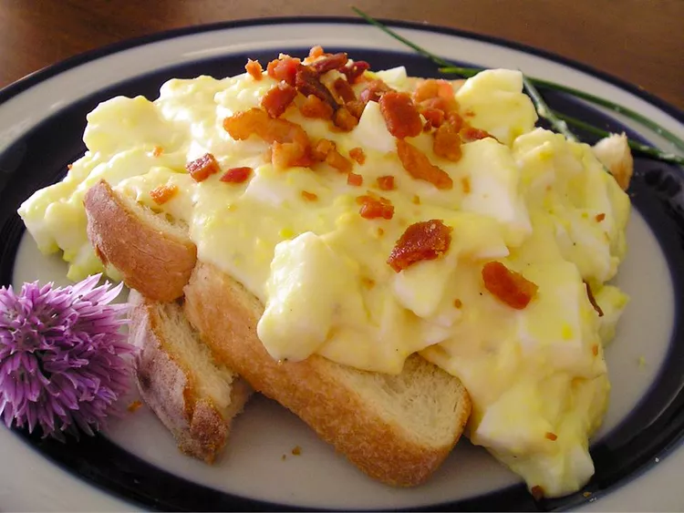

Egg toast Recipe

Egg toast recipe
This is my favourite food that i love to eat as breakfast whenever i am
planning to study
It is not difficult to prepare by following the steps below :
Ingredients :
- 12 hard-cooked eggs, peeled
- ¼ cup butter
- ½ cup all-purpose flour
- 3 cups milk
- 1 tablespoon chicken bouillon granules
- 6 slices white bread
- lightly toasted salt and white pepper to taste
Steps
-
Separate egg whites from egg yolks. Place egg yolks into a bowl and mash
with a fork. Chop egg whites into small pieces and set aside.
-
Melt butter in a saucepan over medium heat; stir in flour until smooth.
Gradually mix in milk and chicken bouillon so that no lumps form and
stir constantly until mixture comes to a boil. Add mashed egg yolks and
mix until dissolved. Stir in chopped egg whites.
- Serve over toast and season with salt and white pepper.
home